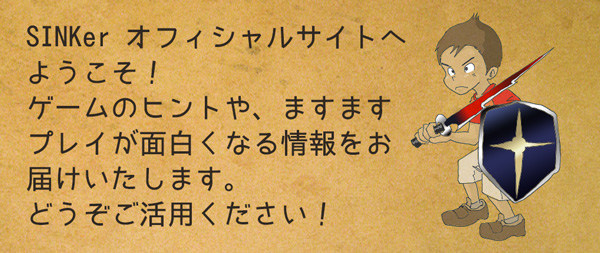

SINKerをプレイいただきまことにありがとうございます。
大好きだった「不思議のダンジョン」系ゲームに聖書の要素を取り入れ、ゲームを楽しみながら福音について知ることができれば・・・という野望を抱き続けて来ました。
一時は断念もしていましたが、ここに来て神様からの開発GOサインが出たので（と信じている）、集中して一気に作り上げました。
とは言うものの内容としては半分のボリュームで、「前編」しか公開されていない状態です。後編頑張ります^^
ゲームの内容はもちろんフィクションです。しかし、聖書の価値観、真理に基づくようストーリーやシステムを考えました。
ゲームの中でソフィが語っていることは、わたしたちに対し神様が語りたいことを代弁しています。
日本人の多くは聖書を開いたこともない、自分とは関係がないと思っていますが、この機会にぜひ聖書を開き「ワード」を確かめてみてください！